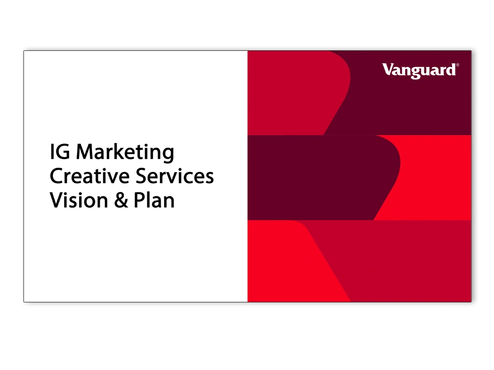
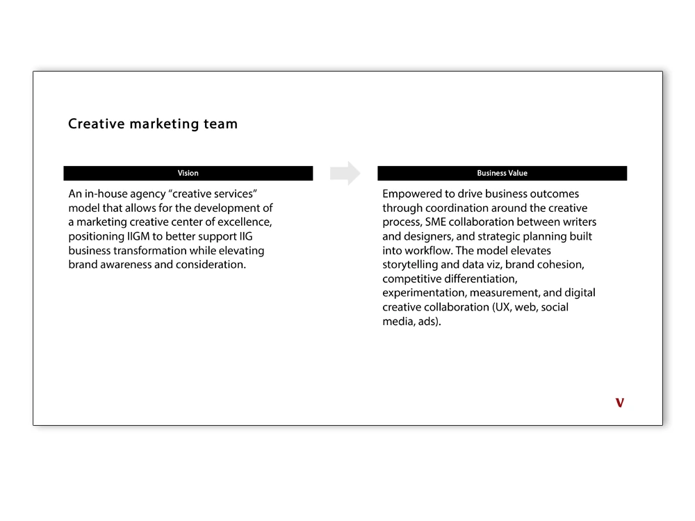
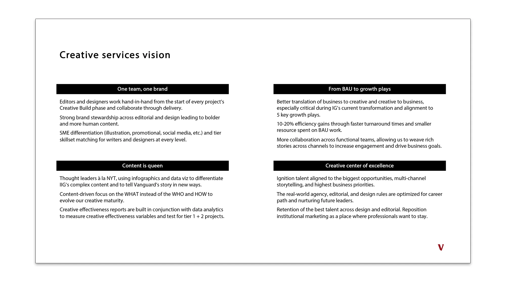
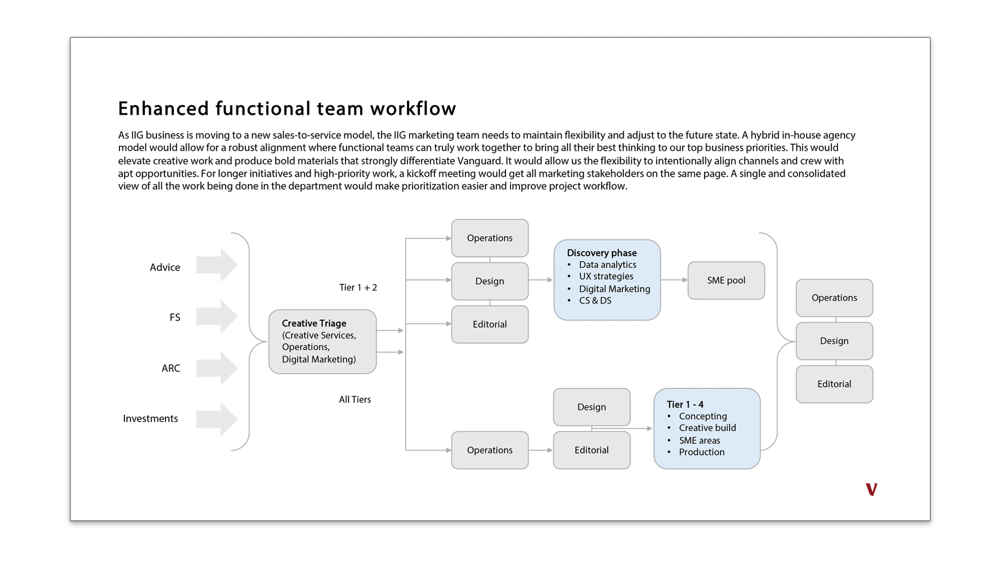
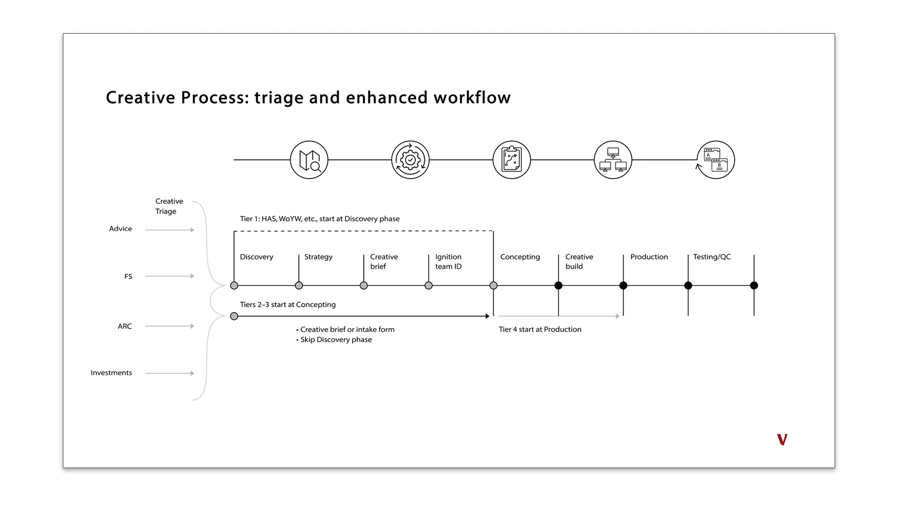
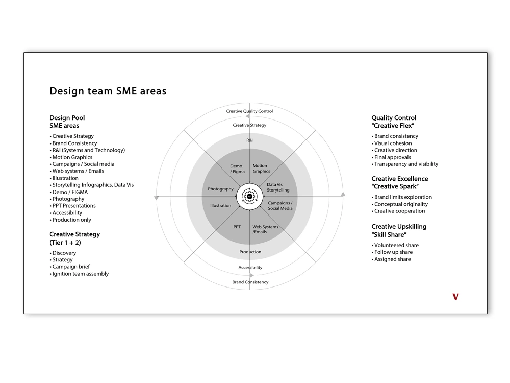
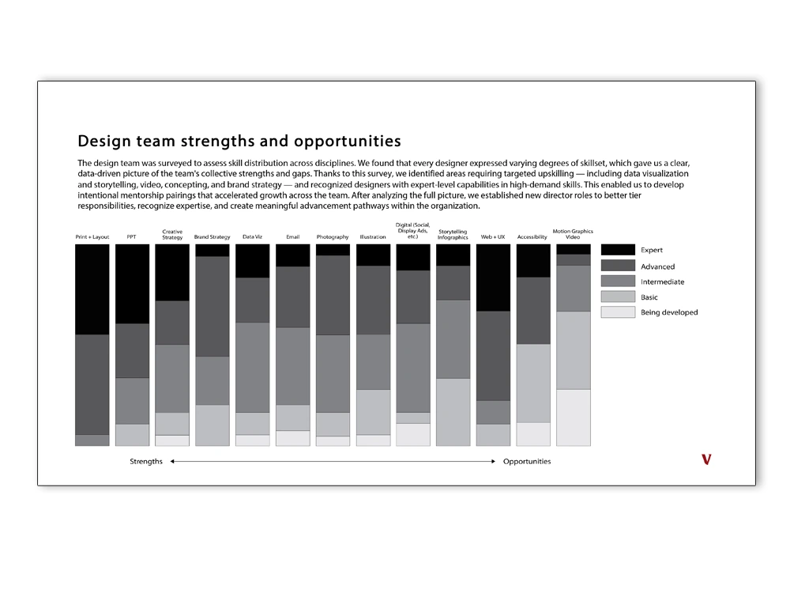
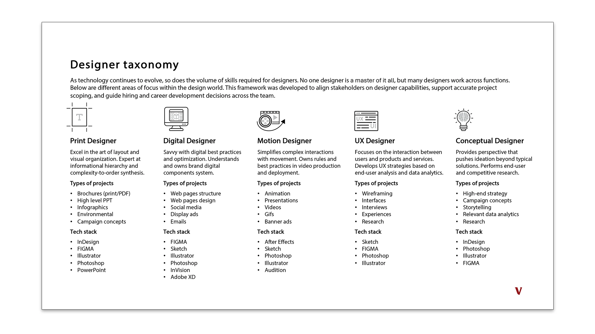
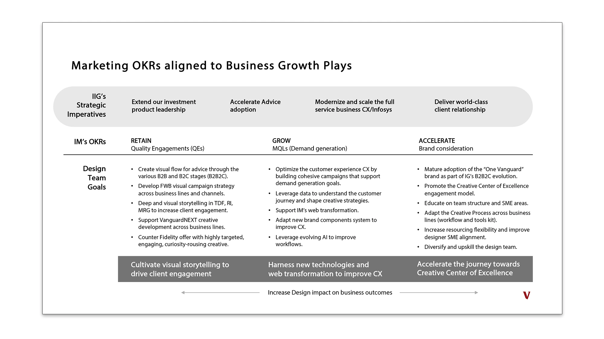
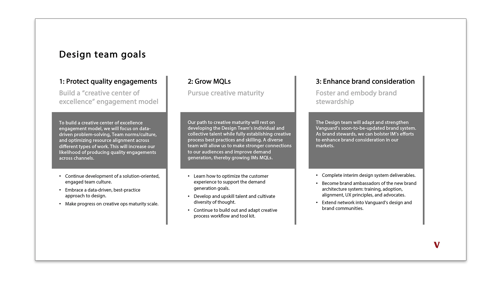

$27M
Enterprise cost avoidance
Leadership
At Vanguard, we restructured a fragmented creative function into a full-service in-house agency. That meant establishing shared intake, defining different levels of project support, and understanding the skills the team had. We connected design goals to the marketing measures the organization already used. The frameworks below show how that work took shape.
Results
Requests arrived from across the organization, but the team had no shared mandate for deciding what to take on or where to invest its time. We developed a vision document that defined the function's purpose and gave the team and its stakeholders a common starting point for planning.



Results
The document established a shared mandate and brought Creative Services into planning conversations earlier.
Work came through emails, direct requests, and hallway conversations. Without shared intake, we couldn't see the full workload or compare competing priorities. The operating model brought those requests into one process and clarified how Operations, Design, and Editorial worked together.

Results
All work entered through one intake point. We could see capacity across the team and assign work against shared priorities.
A flagship report and a one-page flyer need different levels of support. The previous process didn't make that distinction. We developed a tiered workflow with defined briefs, discovery, and handoffs, so the team could match its effort to the project.

Results
The team recorded a 19% efficiency gain. Higher-tier projects received more strategic support, while routine work required less senior time.
We had no shared view of the team's skills. Assignments depended heavily on availability, and development needs were difficult to identify. A comprehensive skill assessment helped us document existing strengths and find gaps in data visualization, motion, and conceptual design.


Results
The findings informed mentorship pairings and proposals for director roles with clearer paths for advancement.
A request for "a designer" rarely explained the skills the project needed. We developed a framework covering print, digital, motion, UX, and conceptual design to make those differences easier to discuss when scoping projects and hiring.

Results
The framework gave stakeholders a more precise way to describe their needs. It also helped designers identify their specialties and the skills they wanted to develop.
Design needed goals that connected to the measures marketing leadership used. We aligned the team's work with quality engagements, marketing-qualified leads (MQLs), and brand consideration, and reviewed progress alongside the wider marketing organization.


Results
Creative work was reviewed against shared marketing objectives.